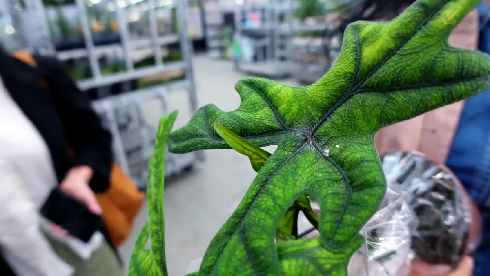

Give Calathea bright filtered light, an airy mix that stays lightly moist without becoming stagnant, and a warm position away from radiators and cold glass. Treat brown edges as a clue to investigate, not proof that tap water is the only cause.

Care at a glance
| Botanical name | Goeppertia spp. (formerly Calathea) |
|---|---|
| Light | Bright filtered to medium indirect light; avoid hot direct sun |
| Water | Keep the mix lightly and evenly moist, letting excess drain; avoid both saturation and hard dry-outs |
| Soil | Airy, moisture-retentive mix in a pot with drainage holes |
| Temperature | Warm, stable indoor temperatures away from draughts |
| Feeding | Light feeding only during active growth; avoid frequent doses in low light |
Does it fit an Amsterdam home?
Prayer plants appreciate a stable position where radiator air, cold windows and sharp summer sun are not competing. In a compact home, a few steps back from a bright window is often better than a sill above a heater.
Window direction is only the beginning. Opposite buildings, balconies, trees, privacy film and distance from the glass all change the usable light. Check the intended position at midday before buying, and remember that a spot that works in June may not work in December.
Water the root ball, not the calendar
Keep the mix lightly and evenly moist, letting excess drain; avoid both saturation and hard dry-outs Use a nursery pot or another container with drainage holes, water the root ball evenly, and empty the cachepot afterwards. Pot size, root mass, light and room temperature determine the interval; the day of the week does not.
Airy, moisture-retentive mix in a pot with drainage holes Repot when roots and mix indicate a need rather than immediately after purchase. A much larger pot stays wet longer and can turn a simple watering error into root damage.
What changes in Dutch winter?
Dutch winter asks for less water, cleaner leaves and more attention to warmth. Keep the root ball from sitting cold and wet, and do not try to solve low light with extra feeding.
During long grey stretches, clean dusty leaves, use the brightest suitable position and pause routine feeding when the plant is not growing. Keep foliage clear of both hot radiator air and cold glass. Make one change at a time so you can see what helped.
Read the plant’s signals
| What you see | What to check first |
|---|---|
| Brown crisp edges | Dry heated air, uneven moisture, salts, roots and pests |
| Yellowing with wet mix | Root stress, drainage and cold conditions |
| Curling leaves | Moisture, humidity, temperature and light changes |
| Faded or scorched patches | Too much direct sun |
One imperfect old leaf rarely requires an emergency response. Look for a pattern across new growth, soil moisture and roots, and compare with a dated photo before changing several variables.
How to propagate it
Divide a healthy established clump while repotting, keeping several stems and roots together in each division. Warmth and stable moisture help the divisions re-establish.
Use clean tools, label the cutting with its date and keep new propagation in stable bright indirect light while roots establish. Share healthy, pest-free material through a local stekjesbieb or plant swap.
Safety at home
Many Goeppertia species are treated as lower-risk for pets, but verify the exact plant and veterinary guidance for your household.